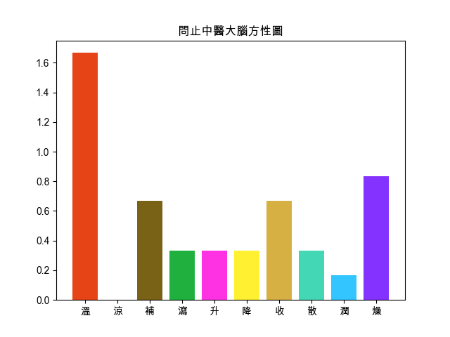

回上頁
【甘草乾薑茯苓白朮湯】
出處
傷寒雜病論
功用
(外部資料)暖土勝濕；補土制水，散寒滲濕；溫脾化濕。
應用
又名腎著湯。寒濕侵襲帶脈，留著不去則腰痛伴有冷感、重墜感。
組成
● 炙甘草 : 補脾和胃，益氣複脈。
● 白朮 : 補氣健脾，燥濕利水，固表止汗，安胎
● 乾薑 : 溫中散寒，回陽通脈，溫肺化飲
● 茯苓 : 利水滲濕，健脾安神
夜尿
【組成方劑的單味藥藥性表】
-
溫熱藥
平藥
寒涼藥
補藥
白朮☀ ,乾薑☀
炙甘草☂
平藥
瀉藥
茯苓☀
-
升性藥
平藥
降性藥
散性藥
乾薑☀
平藥
收性藥
炙甘草☂ ,白朮☀
茯苓☀
